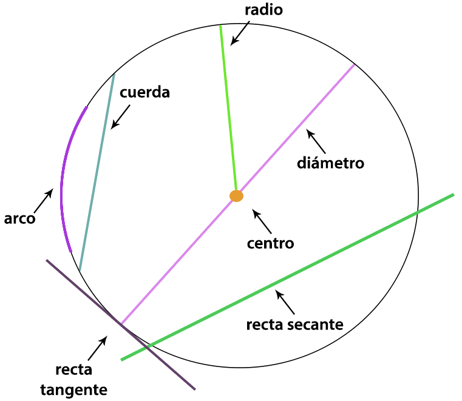
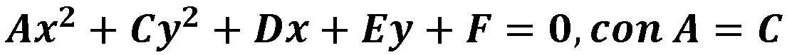
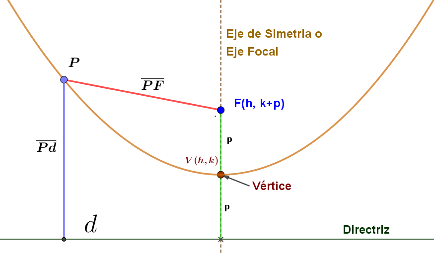

Introducción
LAS CÓNICAS
«Sin matemáticas, no hay nada que puedas hacer. Todo a tu alrededor es matemáticas. Todo a tu alrededor son números.» «Shakuntala Devi.»
!Bienvenido!
- Iniciamos este paseo matemático a través de la historia sobre las Cónicas.
«Sin matemáticas, no hay nada que puedas hacer. Todo a tu alrededor es matemáticas. Todo a tu alrededor son números.» «Shakuntala Devi.»
!Bienvenido!

Es un conjunto de puntos (x , y) que cumplen una determinada propiedad que únicamente cumplen dichos puntos. ejemplo: la mediatriz de un segmento es el lugar geométrico de los puntos que equidistan de los extremos de dicho segmento; la bisectriz es el lugar geométrico de los puntos que equidistan de dos rectas, etc.

La circunferencia como lugar geométrico: es un conjunto de puntos que determinan una línea curva cerrada cuyos puntos están todos a la misma distancia de un punto fijo llamado centro.

Fórmula para calcular la distancia entre dos puntos |
Dado dos puntos: A(x1,y1) y B(x2,y2), la distancia entre A y B la obtenemos mediante la siguiente relación:
|
El centro de la circunferencia es un punto cualquiera en el plano cartesiano de coordenadas (h , k), es decir el valor en el plano de la variable "x" corresponde a h y el valor de la variable "y" corresponde a k; cuyo radio es r como se observa en la siguiente figura.

Esta ecuación se obtiene cuando el centro C(h,k) de la circunferencia coincide con el origen, es decir, de coordenadas C(0,0).

Se obtiene al desarrollar los binomios de la ecuación ordinaria e igualarla a cero y realizar algunas sustituciones para obtener la ecuación general de la circunferencia:

Nota: revisa los conocimientos de productos notables y factorización de polinomios.

La elipse como lugar geométrico: Es una curva plana, simple y cerrada con dos ejes de simetría que resulta al cortar la superficie de un cono por un plano oblicuo al eje de simetría con ángulo mayor que el de la generatriz respecto del eje de revolución.
Si en centro de la elipse es el origen nos indica que las coordenadas del punto (h, K), son (0,0).

Desarrollando los cuadrados de los numeradores de la ecuación ordinaria, eliminando denominadores y simplificando, se llega a la ecuación general de la elipse, que en su forma extensa es la ecuación general de las cónicas:
 La parábola como lugar geométrico: Es el lugar geométrico que describe un punto P que se mueve en el plano de tal manera que equidistan de un punto fijo F el cual se llama foco y una recta fija d llamada directriz.
La parábola como lugar geométrico: Es el lugar geométrico que describe un punto P que se mueve en el plano de tal manera que equidistan de un punto fijo F el cual se llama foco y una recta fija d llamada directriz.
Un punto P está en la parábola si y sólo si las distancias d(P, F) y d(P, d) son iguales. El eje de la parábola es la recta que pasa por F y es perpendicular a la directriz. El vértice de la parábola es el punto V sobre el eje situado a media distancia entre F y d. El vértice es el punto en la parábola más cercano a la directriz.
Podemos denotar la definición de parábola en forma de conjunto de la siguiente manera: P(d, F ) = {P/ d(P,d) = d(P, F)}

Para obtener la ecuación de la parábola vertical, con vértice en el origen V(0,0) y el foco sobre el eje y de coordenadas (0,p), ( con p > 0), y la ecuación de la directriz es y = -p (ver figura).

Un punto P(x, y) está en la gráfica de la parábola si y sólo si d(P, F) = d(P,D); reemplazando en la fórmula de la distancia tenemos:

Elevando al cuadrado ambos miembros de la ecuación y simplificando obtenemos la ecuación de la parábola con vértice en el origen y con eje focal que coincide con el eje y
. 
 Si variamos el signo del parámetro p (p < 0) obtenemos el gráfico de la izquierda. En conclusión para determinar la concavidad de una parábola es necesario analizar lo siguiente:
Si variamos el signo del parámetro p (p < 0) obtenemos el gráfico de la izquierda. En conclusión para determinar la concavidad de una parábola es necesario analizar lo siguiente:
Si p>0 entonces la parábola abre hacia la arriba.
Si p<0 entonces la parábola abre hacia abajo.
En resumen tenemos:
|
Ecuación canónica:
|
Foco: F(0, ±p) |
Directriz: y= ± p |
Ecuación con el eje: x = 0 |
Lado Recto:
|
|
Ecuación canónica:
|
Foco: F(p, 0) |
Directriz: x= -p |
Ecuación con el eje: y= 0 |
Lado Recto:
|
Para obtener la ecuación de la parábola con vértices de coordenadas (h,k) y de eje focal paralelo a cualquiera de los ejes coordenados seguimos los mismos pasos anteriores y obtendremos las siguientes ecuaciones que resumimos a continuación


Si p>0 entonces la parábola abre hacia arriba.
Si p<0 entonces la parábola abre hacia abajo.

La hipérbola como lugar geométrico: es aquél lugar geométrico de los puntos del plano que se mueven de tal manera que el valor absoluto de la diferencia de sus distancias a dos puntos fijos llamados focos son siempre constantes.

Nivel 1. Juega identificando que tipo de cónica genera la ecuación...
Nivel 2. Juega identificando el tipo de cónica que genera la ecuación general...
Rúbrica de evaluación de contenidos.
REFERENCIAS BIBLIOGRÁFICAS
García, J. G. J. e Izquierdo, S. J. (2017). GeoGebra, una propuesta para innovar el proceso enseñanza-aprendizaje en matemáticas. Revista electrónica sobre tecnología, educación y sociedad, 4(7).
Hohenwarter, M. (2002). GeoGebra-ein Softwaresystem für dynamische Geometrie und Algebra der Ebene.
Hohenwarter, M., Kovács, Z. y Recio, T. (2019). Determinando propiedades geométricas simbólicamente con GeoGebra. Números. Revista de Didáctica de las Matemáticas, 100, 79-84.
Robutti, O. (2016). Atti del IV GeoGebra Italian Day 2014 LA FORMAZIONE DOCENTI CON GEOGEBRA.
Hohenwarter, M. (2014). Multiple representations and GeoGebra-based learning environments. Union. Revista Iberoamericana de Educación Matemática, 39, 11-18.
Santiago, R., y Bergmann, J. (2018). Aprender al revés. Flipped Classroom 3.0 y Metodologías activas en el aula.
Geogebra. (s. f.). Manual de GeoGebra. Recuperado el 11 de octubre de 2021. https://wiki.geogebra.org/es/Manual
Obra publicada con Licencia Creative Commons Reconocimiento Compartir igual 4.0

.png)
.png)